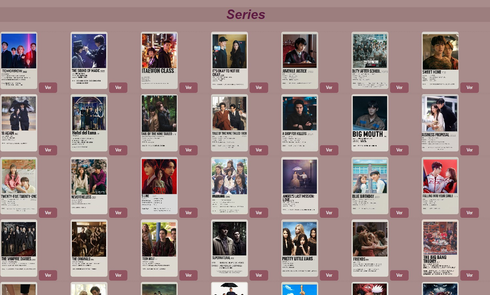

Desarrollo Web
Desarrollo de páginas y propuestas digitales enfocadas en estructura, diseño y experiencia de usuario. Incluye proyectos que integran programación y diseño visual para crear sitios funcionales e interactivos.

Registro de entrada
Es un registro de entrada para un sistema de control de un fraccionamiento
Este es el registro de entrada de un fraccionamiento en una pagina web, tiene un diseño sencillo, estetico y facil de leer para identificar rapidamente el auto que se busca, se puede eliminar el registro, agregar uno nuevo rellenando la informacion y esta la opcion de modificarlo.

Registro de entrada
Es un registro de entrada para un sistema de control de un fraccionamiento
Esta es la pagina web de registro de entrada de un fraccionamiento. tiene un diseño sencillo y facil de leer para identificar rapidamente el auto que se busca, se puede eliminar el registro cuando el auto sale del fracionamiento, agregar uno nuevo rellenando la informacion y esta la opciuon de modificarlo.

Little Woman
Pagina web para mujeres de un proyecto de programación
Esta pagina es de tipo informativo, cada boton tiene una funcionalidad de busqueda especificada, es intuitiva y cuenta con diseño en relacion a su contenido. Esta pagina cumple con el criterio de CRUD para una pagina web al poder, subir, editar y eliminar posts.

Pagina de peliculas
Descripciones de peliculas
El diseño de esta pagina te invita rebizar cada opcion, tiene un gran repertorio de peliculas y una breve reseña de cada una, al dar clic en el boton se muestra la informacion completa de cada pelicula tanto su categoria, duracion y descripcion.

Pagina de series
Descripciones de series
Este es un diseño web lindo y sencillo de manejar, se presenta una lista de diferentes tipos de series y al precionar el boton se muestra la informacion de cada seria.

Galería de Imágenes
Página web para mostrar imágenes, subir y editar
Este es un diseño de pagina web donde uno puede almacenar sus imagene y buscar fotos por fechas especificas. Cumple con el criterio CRUD al poder subir(Create), actualizar(Update) y eliminar(Delete) imagenes desde la misma pagina. Ademas de tener un diseño intuitivo y simple que llama la atencion del usuario.

Base de Datos
Trabajos de base de datos
En la imagen se muestra como se usan diferententes funciones y atajos que tiene el lenguaje de consulta de MySQL. El codigo basicamente dice "Muestrame todo de la tabla actor donde la columna first_name tenga una A al principio". Esto ayuda a hacer mas facil leer los datos asi en lugar de buscar entre 200 filas buscas entre 10, se puede especificar aun mas para tener un nivel de precicion mayor.

Pong
Codigo base del videojuego retro Pong
Este es un codigo hecho en python con la extencion de pygames para hacer el juego clasico pong, en la imagen se muestra como se imprime el marcador, el si la pelota toca en el lado izquierdo se da un punto al jugador dos y al contrario si choca en el borde derecho se da un punto la jugador uno. La pelota acelera 1.1 cada vez que rebota en un jugador aumentando la dificultad conforme pasa el tiempo.